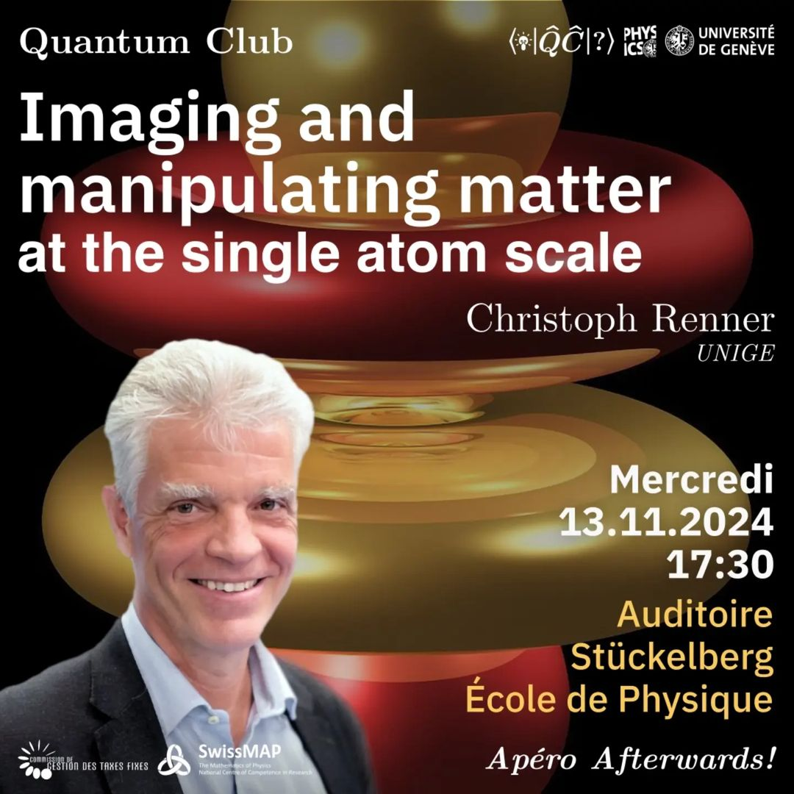
Imaging and Manipulate Matter at single atom scale
Prof. Christoph Renner will discuss an aspect of Scanning Tunneling Microscopy!
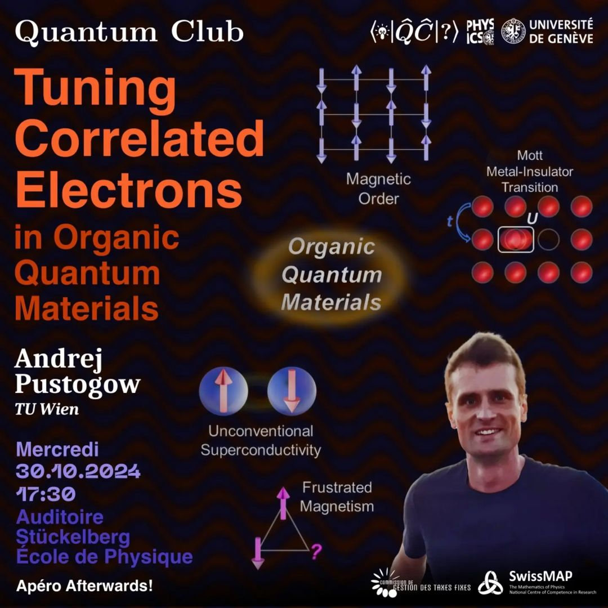
Tuning correlated electrons in organic quantum materials
Brief description.
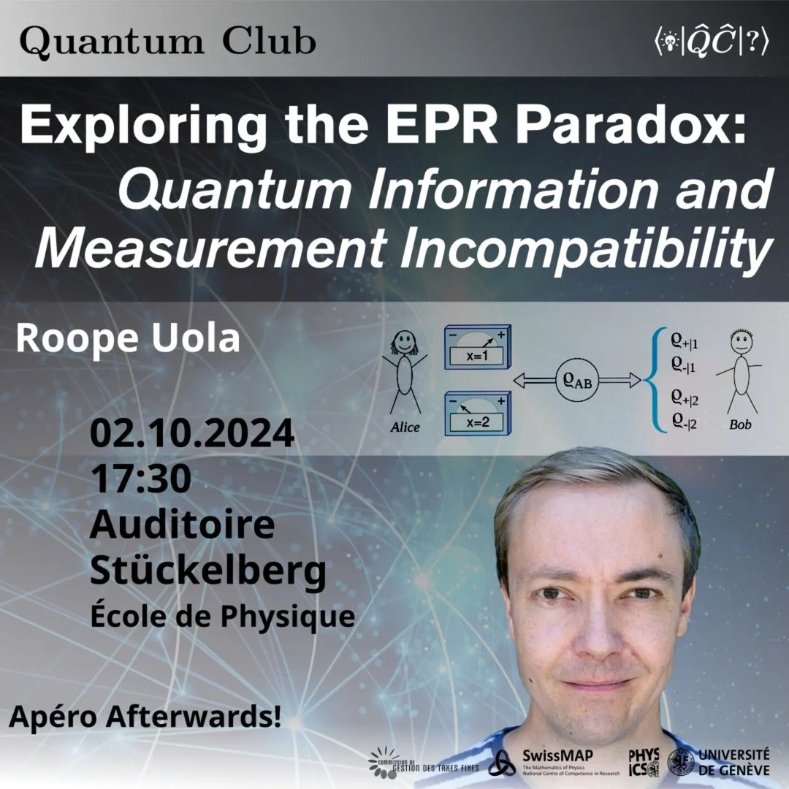
Exploring the EPR paradox: Quantum information and measurement incompatibility.
Prof. Roope Uola discusses the EPR paradox!
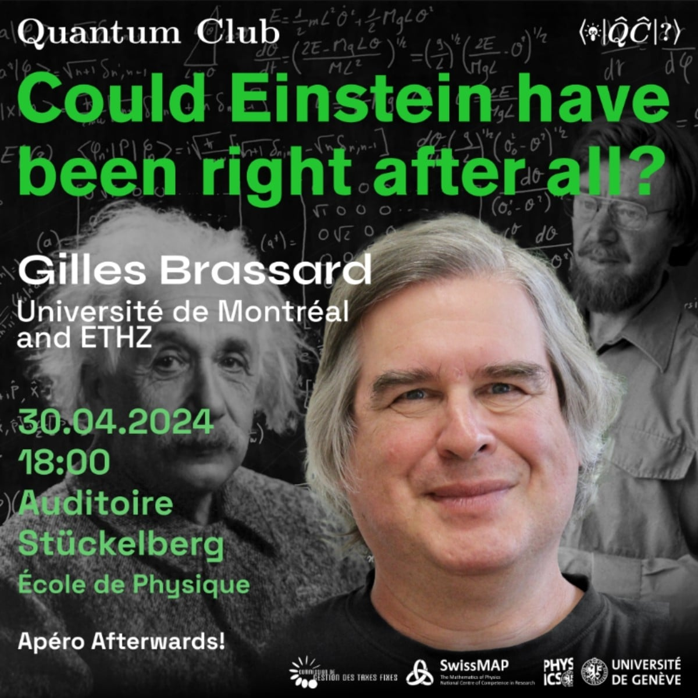
Were you told that our world is nonlocal?
Gilles Brassard will present us a new fascinating interpretation of Quantum Mechanics which makes it local!
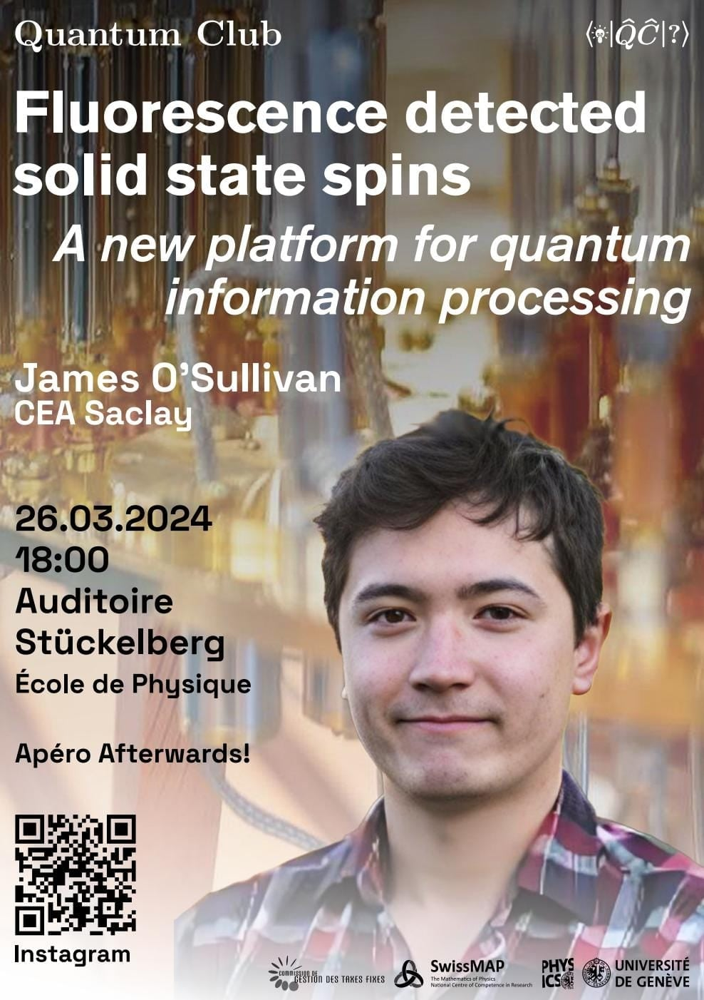
Fluorescence detected solid state spins: A new platform for quantum information processing
Discussing a different type of quantum hardware with Dr. James O'Sullivan!
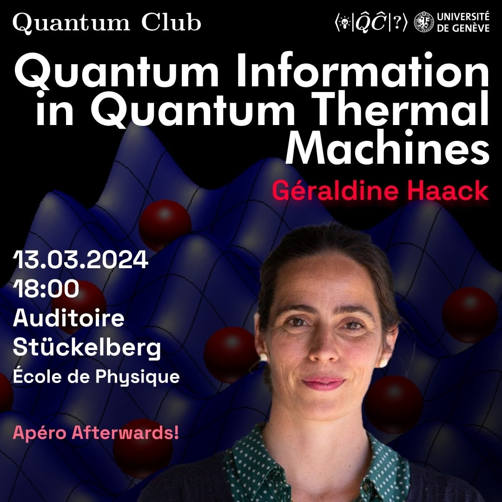
Quantum information in quantum thermal machines.
Exploring the dispersion of information in quantum machines with Géraldine Haack!
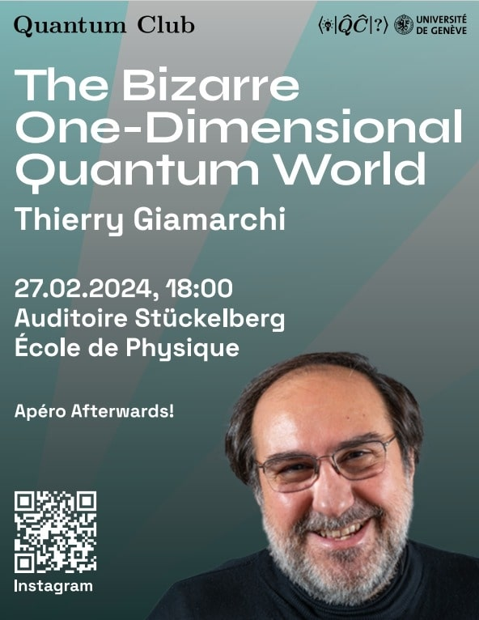
The Bizarre one-dimensional quantum world.
Discovering the bizarre phenomenons of one dimensional space in Quantum Mechanics with Thierry Gianmarchi!
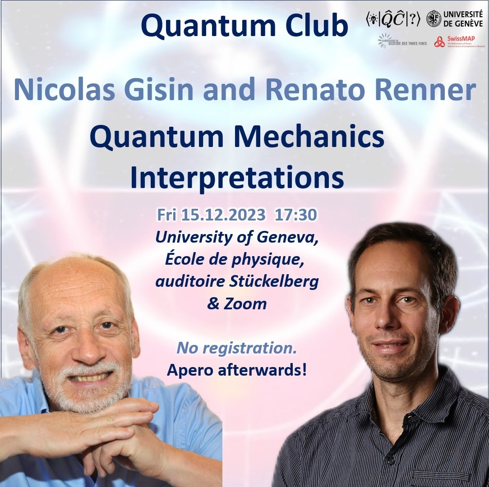
Quantum Mechanics interpretations. Debates.
Discussing Two interpretation of Quantum mechanics with Nicolas Gisin & Renato Renner!
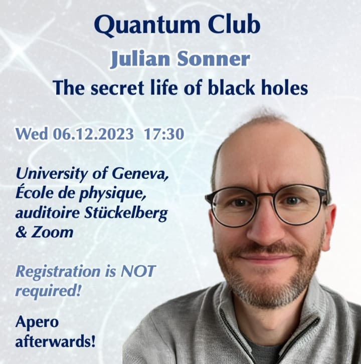
Secret Life of Black Holes
Let's explore some unusual aspect of Black Holes with Julian Sonner!
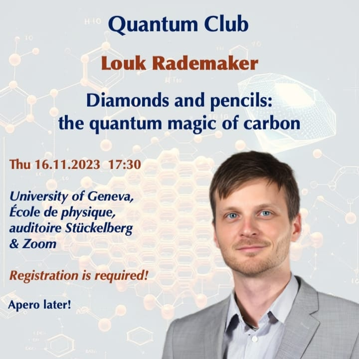
Diamonds and pencils: the quantum magic of carbon.
Discovering the wonderfull properties of carbon with Louk Rademaker!
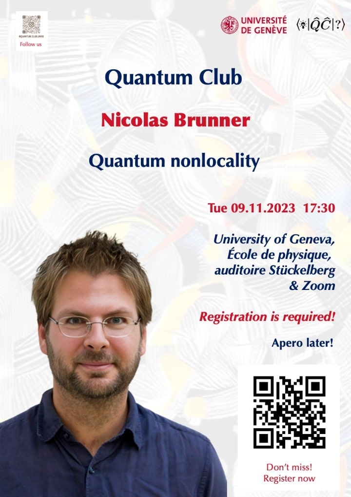
Quantum NON-Locality
An introduction to Locality and non-locality given by Nicolas Brunner!
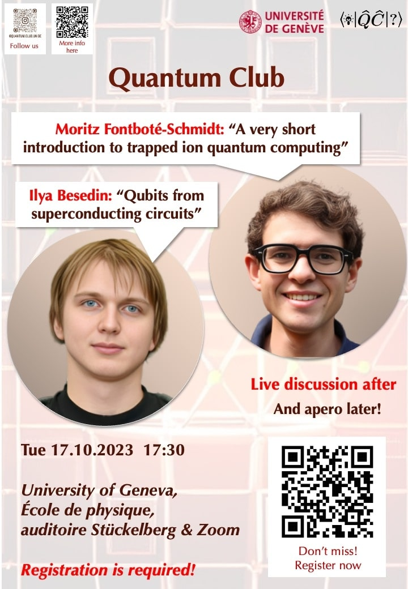
Superconducting Qubits vs Trapped Ions
Discussing two different aproach to quantum computing with Ilya Besedin ∧ Mortiz Fontboté-Schmidt!
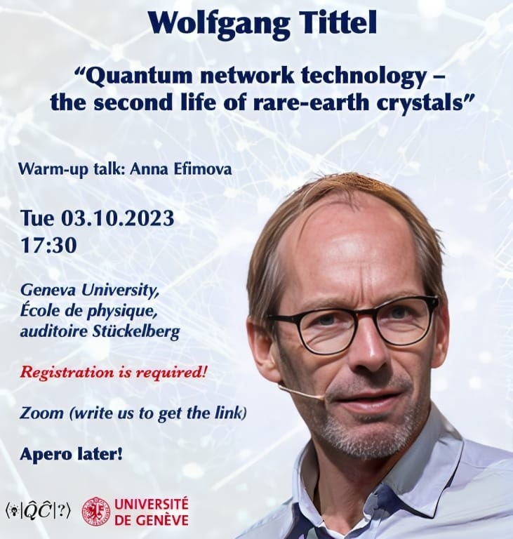
Quantum networks
Imagining the future Quantum networks with Prof. Wolfgang Tittel!